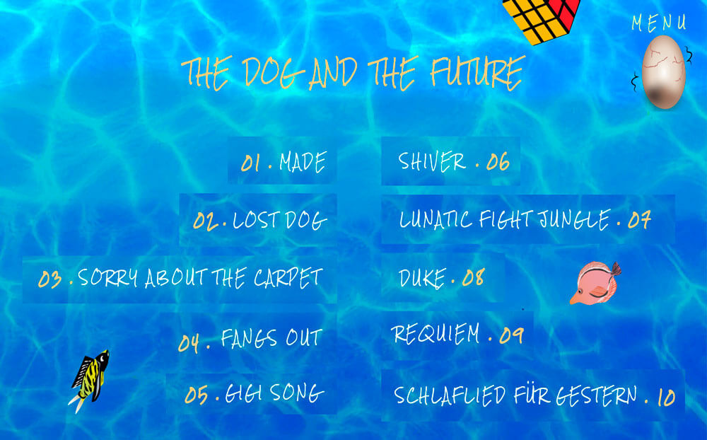
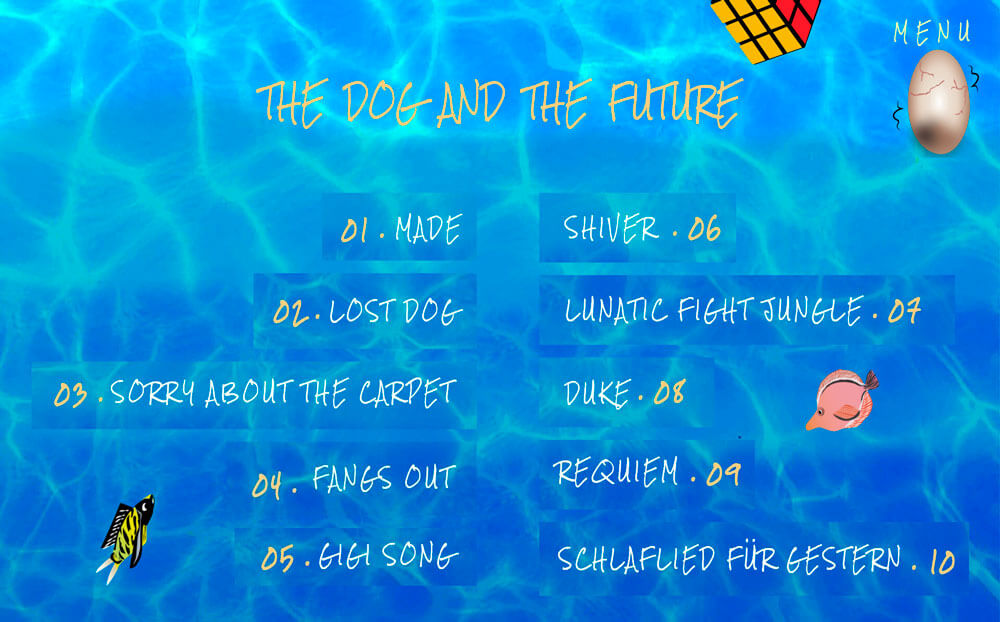

Lab 201
Site événementiel pour la sortie de l'album The Dog and the Future d'Agar Agar.
 

Brief
On avait pour objectif de réaliser un site événementiel pour la sortie d'un album d'un groupe ou d'un artiste au choix. Nous avons donc choisis de prendre le groupe Agar Agar, et leur album The Dog and the Future. Ce groupe a un univers vraiment spécial et bien à eux, c'est pour cela que nous sommes partis sur un site qui change vraiment de l'ordinaire. Ce site est un one scroll page. On commence dans le ciel, et plus on avance dans le site on descend jusqu'à atteindre le fond de la mer. Nous avons repris tout leur univers pour réaliser ce site. Nous étions une équipe de 4, composée de 3 créas et d'un dev. Le site n'est pas responsive et est optimal sur un écran 17 pouces. Ce projet était découper en 2 semaines de benchmark, création de maquettes, wireframes, etc ... et une semaine de développement. Nous avons une partie administration qui permet d'ajouter, de modifier et de supprimer des dates de concerts/tournée.
Dans le futur
Pour la suite, j'aimerais pouvoir faire en sorte que le site devienne responsive, qu'on puisse en profiter qu'importe notre matériel. Je n'ai pas eu le temps de faire le parallax que l'on voulait instaurer, donc ceci est aussi prévu.
Lien du site Code Source